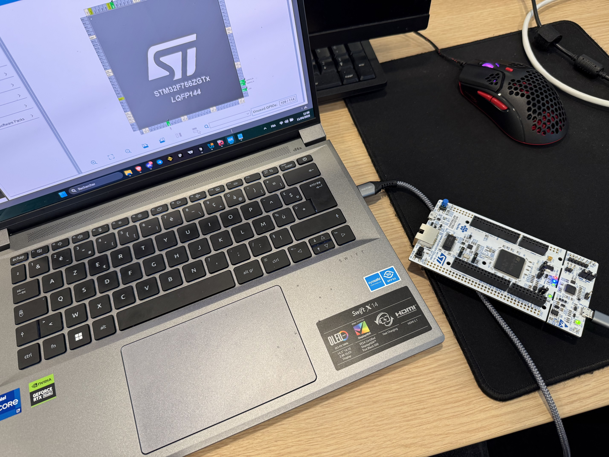
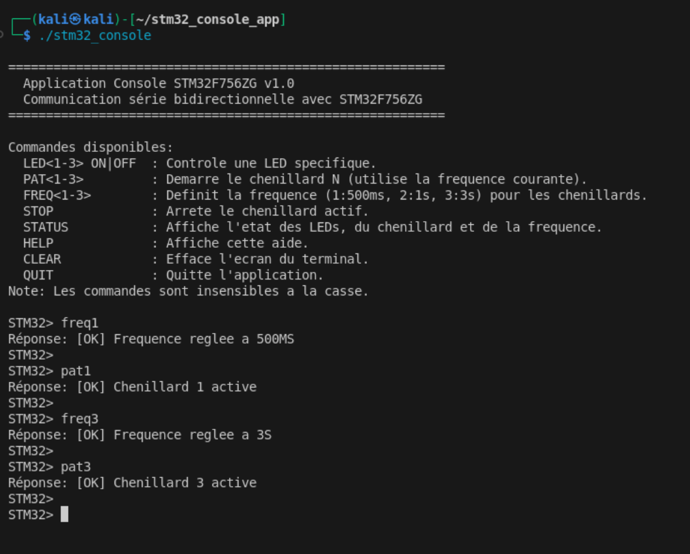

Introduction
Fonctionnalités Clés du Projet
LEDs & Chenillards
Contrôle individuel des LEDs et animations lumineuses (chenillards) avec gestion de la fréquence via Timers.
Dialogue Linux ↔ STM32
Mise en place d'une communication UART bidirectionnelle robuste pour l'envoi de commandes et la réception de réponses.
Console de Contrôle
Application C sous Linux pour la saisie utilisateur, la validation des commandes et l'interaction avec le port série.
- Ce projet s'inscrit dans le cadre de l'UE de Reverse Engineering, axé sur la compréhension pratique des systèmes électroniques.
- L'objectif principal était de mettre en œuvre une communication série bidirectionnelle entre un PC (Linux) et un microcontrôleur STM32F756ZG.
- L'application Linux développée permet le contrôle à distance des périphériques du STM32 via des commandes textuelles.
- Les fonctionnalités implémentées incluent le contrôle individuel de LEDs et la gestion de chenillards animés à différentes vitesses.
- Le développement a nécessité la manipulation directe des périphériques GPIO, Timers, et UART via la programmation C embarquée et la bibliothèque HAL.
Contexte Pédagogique
Guidés par un cahier des charges, ce projet visait l'application pratique des concepts d'électronique et de programmation C embarquée sur un microcontrôleur STM32F756ZG. Les compétences clés à développer étaient :
- Gestion des entrées/sorties (GPIO) pour le contrôle de LEDs.
- Utilisation des Timers pour créer des séquences temporelles (chenillards).
- Mise en place d'une communication série (UART) pour dialoguer avec un système externe (PC Linux).
- Utilisation de l'environnement de développement STM32 (CubeMX, CubeIDE, HAL).
L'accent était mis sur la compréhension du fonctionnement bas niveau et la structuration du code (firmware et application Linux).
STM32F756ZG
Le STM32F756ZG est un microcontrôleur ARM 32 bits haute performance avec de nombreux périphériques intégrés :
- Cœur ARM Cortex-M7 cadencé jusqu'à 216 MHz
- Mémoire Flash de 1 Mo
- RAM de 320 Ko
- Interfaces de communication multiples (UART, SPI, I2C, etc.)
- Périphériques de temporisation avancés (timers)
- Nombreux GPIO configurables
Architecture du système
Vue d'ensemble
Le système est composé de deux acteurs principaux qui dialoguent via une liaison série UART : l'ordinateur sous Linux et le microcontrôleur STM32.
Diagramme de l'Architecture
Ce schéma illustre l'interaction matérielle entre l'ordinateur et le microcontrôleur qui pilote les LEDs.
Application Linux (Le Centre de Contrôle)
- Interface utilisateur simple en ligne de commande
- Communication série via un port TTY (ex: `/dev/ttyACM0`)
- Validation et formatage des commandes envoyées
- Gestion de commandes spéciales (
help,clear,quit)
Microcontrôleur STM32 (L'Exécutant)
- Contrôle direct des LED individuelles (allumer/éteindre)
- Gestion des chenillards (patterns lumineux animés)
- Utilisation des timers pour contrôler la vitesse des animations
- Interface UART pour recevoir les ordres et envoyer des réponses
Flux de communication typique
Le flux de communication textuel entre les deux composants suit ce schéma :
- L'utilisateur entre une commande dans l'application Linux.
- L'application valide le format de la commande (est-elle connue ?).
- La commande est envoyée au microcontrôleur via le port série UART.
- Le microcontrôleur reçoit la commande (souvent via une interruption).
- Il analyse la commande et exécute l'action correspondante (ex: allumer une LED).
- Le microcontrôleur prépare et envoie une réponse (ex: "OK" ou "Erreur") à l'application Linux.
- L'application Linux reçoit et affiche la réponse à l'utilisateur.
Modules logiciels (Organisation du code)
Pour organiser le code, nous l'avons divisé en modules spécialisés :
Module LED
Contrôle des LED (led_controller.c)
Module Pattern
Gestion des chenillards (pattern_controller.c)
Module Timer
Gestion des fréquences (timer_handler.c)
Module UART
Communication série (uart_handler.c / serial_handler.c)
Module Commande
Analyse des commandes (command_parser.c / command_validator.c)
Interface Linux
Affichage et saisie (ui_handler.c, main.c)
Application Linux (Le Centre de Contrôle)
Approche Côté Linux
Pour l'application Linux, notre travail de rétro-conception a consisté à comprendre comment envoyer des commandes correctement formatées au STM32 et comment interpréter ses réponses. Nous avons développé une interface console (en ligne de commande) qui permet à l'utilisateur de dialoguer avec le microcontrôleur via le port série. L'architecture modulaire sépare la gestion de la communication série, la validation des commandes et l'interface utilisateur.
Structure du code (Modules Principaux)
L'application Linux est organisée en fichiers C distincts pour plus de clarté :
main.c
Cœur de l'application : boucle principale, initialisation, orchestration des autres modules.
serial_handler.c
Gestion de la communication série avec le microcontrôleur (ouverture du port, envoi/réception).
Baudrate : Vitesse de communication (115200 bits/seconde). Les deux appareils doivent utiliser la même vitesse pour se comprendre !
command_validator.c
Vérification des commandes saisies par l'utilisateur avant l'envoi.
ui_handler.c
Gestion de l'interface utilisateur (affichage des messages, du prompt, lecture de la saisie).
special_commands.c
Traitement des commandes "spéciales" qui ne sont pas envoyées au STM32 (help, clear, quit).
Comment Lancer l'Application Linux
Pour compiler et exécuter l'application de contrôle sur votre système Linux :
-
Compilation :
Placez-vous dans le répertoire contenant le code source et le Makefile, puis exécutez :
makeCela va générer l'exécutable (par exemple,
stm32_console). -
Exécution :
Lancez l'exécutable compilé. Vous pouvez spécifier le port série en argument (facultatif, défaut:
/dev/ttyACM0) :./stm32_console [port_série]Exemple :
./stm32_console /dev/ttyACM1
Assurez-vous que la carte STM32 est connectée et que vous avez les permissions nécessaires pour accéder au port série.
Point d'entrée principal (main.c)
Le fichier main.c constitue le point d'entrée de l'application. Il contient la boucle principale
qui traite les commandes utilisateur et gère la communication avec le microcontrôleur.
int main(int argc, char *argv[]) {
char command[MAX_COMMAND_LENGTH];
bool running = true;
char *port = "/dev/ttyACM0"; // Port série par défaut
// Traitement des arguments de ligne de commande
if (argc > 1) {
port = argv[1];
}
// Initialisation des modules
initialize();
// Ouverture du port série
if (!Serial_Open(port)) {
UI_DisplayError("Impossible d'ouvrir le port série");
return EXIT_FAILURE;
}
// Affichage du message de bienvenue et des commandes disponibles
UI_DisplayWelcome();
UI_DisplayHelp();
// Boucle principale
while (running) {
// Affichage du prompt et lecture de la commande
UI_DisplayPrompt();
if (UI_ReadCommand(command, MAX_COMMAND_LENGTH)) {
// Traitement des commandes spéciales
if (Special_IsSpecialCommand(command)) {
if (Special_ProcessCommand(command) == SPECIAL_CMD_QUIT) {
running = false;
}
continue;
}
// Validation de la commande
if (Command_Validate(command)) {
// Envoi de la commande au microcontrôleur
if (Serial_SendCommand(command)) {
// Attente et affichage de la réponse
char response[256];
if (Serial_ReceiveResponse(response, sizeof(response))) {
UI_DisplayResponse(response);
} else {
UI_DisplayError("Pas de réponse du microcontrôleur");
}
} else {
UI_DisplayError("Erreur lors de l'envoi de la commande");
}
} else {
UI_DisplayError("Commande invalide");
}
}
}
// Nettoyage avant de quitter
cleanup();
return EXIT_SUCCESS;
}
Explication détaillée :
- Variables Initiales : Déclaration du buffer
commandpour stocker la saisie utilisateur, du booléenrunningpour contrôler la boucle, et duportsérie (avec une valeur par défaut). - Arguments Ligne de Commande (
argc,argv) : Si un argument est fourni au lancement (ex:./stm32_console /dev/ttyACM1), il est utilisé comme nom de port série, sinon le port par défaut est conservé. - Initialisation Générale (
initialize()) : Appel d'une fonction (supposée) qui initialise les différents modules (interface utilisateur, gestionnaire série, etc.). - Ouverture Port Série (
Serial_Open(port)) : Tente d'ouvrir et de configurer le port série spécifié. En cas d'échec (retourfalse), affiche une erreur (UI_DisplayError) et quitte (EXIT_FAILURE). - Messages de Bienvenue (
UI_DisplayWelcome,UI_DisplayHelp) : Affiche un message d'accueil et l'aide initiale des commandes via le module UI. - Boucle Principale (
while (running)) : Continue tant que l'utilisateur n'a pas demandé à quitter.- Affichage Prompt et Lecture (
UI_DisplayPrompt,UI_ReadCommand) : Affiche l'invite de commande (ex:STM32>) et lit la saisie de l'utilisateur dans le buffercommand. - Commandes Spéciales (
Special_IsSpecialCommand,Special_ProcessCommand) : Vérifie si la commande est locale (ex:quit,clear,help). Si oui, la traite. Si c'estquit, metrunningàfalsepour sortir de la boucle. Lecontinuepasse directement à l'itération suivante. - Validation (
Command_Validate(command)) : Si ce n'est pas une commande spéciale, vérifie si le format de la commande est valide pour être envoyé au STM32. - Envoi Série (
Serial_SendCommand(command)) : Si la commande est valide, tente de l'envoyer via le port série. Gère l'erreur d'envoi. - Réception Réponse (
Serial_ReceiveResponse,UI_DisplayResponse) : Si l'envoi réussit, attend une réponse du STM32 (avec un timeout interne). Si une réponse est reçue, l'affiche. Gère l'erreur si aucune réponse n'est reçue. - Gestion Erreur Commande Invalide : Si
Command_Validateretournefalse, affiche un message d'erreur viaUI_DisplayError.
- Affichage Prompt et Lecture (
- Nettoyage (
cleanup()) : Avant de terminer le programme (après la sortie de boucle), appelle une fonction pour libérer les ressources (ex: fermer le port série). - Code de Sortie (
EXIT_SUCCESS) : Retourne 0 pour indiquer que le programme s'est terminé normalement.
Communication série (serial_handler.c)
Le module de communication série est crucial. Il gère l'ouverture, la configuration du port série (comme `/dev/ttyACM0` sous Linux) et l'échange de données avec le microcontrôleur. Voici un aperçu de la fonction de réception :
bool Serial_ReceiveResponse(char *response, size_t size) {
if (serialFd < 0 || response == NULL || size == 0) {
return false;
}
memset(response, 0, size);
size_t totalBytesRead = 0;
ssize_t bytesReadNow = 0;
fd_set readfds;
struct timeval timeout;
bool keepReading = true;
while (keepReading && totalBytesRead < size - 1) {
FD_ZERO(&readfds);
FD_SET(serialFd, &readfds);
// Timeout court pour détecter la fin de transmission
timeout.tv_sec = 0;
timeout.tv_usec = 50 * 1000; // 50 ms
int selectResult = select(serialFd + 1, &readfds, NULL, NULL, &timeout);
if (selectResult < 0) { // Erreur select
perror("Erreur select() en lecture série");
return false;
} else if (selectResult == 0) { // Timeout -> fin de réponse
keepReading = false;
} else { // Données disponibles
bytesReadNow = read(serialFd, response + totalBytesRead, size - 1 - totalBytesRead);
if (bytesReadNow < 0) { // Erreur lecture
if (errno == EAGAIN || errno == EWOULDBLOCK) {
keepReading = false;
} else {
perror("Erreur read() en lecture série");
return false;
}
} else if (bytesReadNow == 0) { // EOF (port fermé?)
keepReading = false;
} else { // Données lues
totalBytesRead += bytesReadNow;
}
}
}
// Assurer la terminaison nulle
response[totalBytesRead] = '\0';
// Nettoyer les \r ou \n finaux
while (totalBytesRead > 0 && (response[totalBytesRead - 1] == '\n' || response[totalBytesRead - 1] == '\r')) {
response[--totalBytesRead] = '\0';
}
return (totalBytesRead > 0);
}
Points clés de l'implémentation :
- Vérifications Initiales : S'assure que le descripteur de fichier série (
serialFd) est valide, que le pointeurresponsen'est pasNULL, et que la taillesizeest supérieure à 0. - Initialisation Buffer (
memset) : Met à zéro le buffer de réceptionresponsepour éviter les données résiduelles. - Boucle de Lecture (
while (keepReading && ...)): Continue tant qu'on pense qu'il y a potentiellement des données à lire (keepReading) et que le buffer n'est pas plein (totalBytesRead < size - 1). - Préparation
select()(FD_ZERO,FD_SET) : Initialise un ensemble de descripteurs (readfds) et y ajoute le descripteur du port série (serialFd). C'est ce descripteur queselect()va surveiller. - Configuration Timeout (
struct timeval timeout) : Définit une courte durée (50 millisecondes ici) pendant laquelleselect()attendra des données. - Appel
select(): SurveilleserialFd.select()bloque l'exécution pendant au maximum la durée dutimeout.- Retour
< 0: Une erreur s'est produite durantselect(). - Retour
== 0: Le timeout a expiré sans qu'aucune donnée n'arrive surserialFd. On suppose que le STM32 a fini d'émettre, donckeepReadingpasse àfalsepour sortir de la bouclewhile. - Retour
> 0: Des données sont prêtes à être lues surserialFd.
- Retour
- Lecture (
read()) : Siselect()a indiqué que des données sont disponibles, tente de lire jusqu'àsize - 1 - totalBytesReadoctets depuisserialFdet les place dans le bufferresponseà la suite des données déjà lues. - Gestion Erreurs
read():- Retour
< 0: Erreur de lecture. Si l'erreur estEAGAINouEWOULDBLOCK(signifiant temporairement indisponible), on arrête de lire (keepReading = false). Sinon (autre erreur), on retournefalse. - Retour
== 0: Fin de fichier (peut arriver si le port est fermé brutalement). On arrête de lire. - Retour
> 0:bytesReadNowoctets ont été lus avec succès. On ajoute ce nombre au compteurtotalBytesRead.
- Retour
- Terminaison Nulle (
response[totalBytesRead] = '\0') : Ajoute le caractère nul C à la fin des données lues pour former une chaîne de caractères valide. - Nettoyage Fin de Ligne : Parcourt la chaîne reçue à reculons et remplace les éventuels caractères
\nou\rfinaux par\0pour obtenir une chaîne propre. - Retour (
return (totalBytesRead > 0)) : Retournetruesi au moins un octet a été lu,falsesinon.
Validation des commandes (command_validator.c)
Avant d'envoyer une commande au microcontrôleur, ce module vérifie si elle respecte un format attendu. Cela évite d'envoyer n'importe quoi au STM32.
bool Command_Validate(const char *command) {
if (command == NULL || strlen(command) == 0) {
return false;
}
// Copie pour manipulation (et mise en majuscule)
char upperCommand[128];
size_t len = 0;
while (command[len] != '\0' && len < sizeof(upperCommand) - 1) {
upperCommand[len] = toupper((unsigned char)command[len]);
len++;
}
upperCommand[len] = '\0';
// Commandes simples
if (strcmp(upperCommand, "HELP") == 0) return true;
if (strcmp(upperCommand, "STATUS") == 0) return true;
if (strcmp(upperCommand, "STOP") == 0) return true;
if (strcmp(upperCommand, "CLEAR") == 0) return true;
if (strcmp(upperCommand, "QUIT") == 0) return true;
// Commandes LED
if (strncmp(upperCommand, "LED", 3) == 0) {
if (len >= 6 &&
isdigit((unsigned char)upperCommand[3]) &&
upperCommand[4] == ' ' &&
(strcmp(upperCommand + 5, "ON") == 0 || strcmp(upperCommand + 5, "OFF") == 0))
{
return true; // Format LED valide
}
}
// Commandes chenillard
if (strncmp(upperCommand, "CHENILLARD", 10) == 0) {
const char* args = upperCommand + 10;
if (strlen(args) >= 4 &&
isdigit((unsigned char)args[0]) &&
strcmp(args + 1, " ON") == 0)
{
return true;
}
if (strncmp(args, " FREQUENCE", 10) == 0 &&
strlen(args) == 11 &&
isdigit((unsigned char)args[10]))
{
return true;
}
}
// Raccourcis
if (strncmp(upperCommand, "PAT", 3) == 0) {
if (len == 4 && isdigit((unsigned char)upperCommand[3])) return true;
}
if (strncmp(upperCommand, "FREQ", 4) == 0) {
if (len == 5 && isdigit((unsigned char)upperCommand[4])) return true;
}
// Aucun format reconnu
return false;
}
Caractéristiques de la validation :
- Vérification Initiale : Refuse les commandes
NULLou vides. - Copie et Majuscules (
upperCommand,toupper) : Crée une copie de la commande en majuscules pour rendre la validation insensible à la casse (ex:led1 onsera traité commeLED1 ON). - Commandes Simples (
strcmp) : Vérifie par comparaison exacte si la commande correspond àHELP,STATUS,STOP,CLEARouQUIT. - Validation Commande LED (
strncmp,isdigit, etc.) :- Vérifie si la commande commence par "LED" (
strncmp). - Vérifie si la longueur est suffisante (
len >= 6). - Vérifie si le 4ème caractère est un chiffre (
isdigit(upperCommand[3])). - Vérifie si le 5ème caractère est un espace (
upperCommand[4] == ' '). - Vérifie si la fin est "ON" ou "OFF" (
strcmp(upperCommand + 5, ...)).
- Vérifie si la commande commence par "LED" (
- Validation Commande Chenillard (
strncmp,isdigit, etc.) :- Vérifie si la commande commence par "CHENILLARD" (
strncmp). - Extrait les arguments (
args = upperCommand + 10). - Format
CHENILLARD<n> ON: Vérifie la longueur, si le premier argument est un chiffre, et si la suite est " ON". - Format
CHENILLARD FREQUENCE<n>: Vérifie si les arguments commencent par " FREQUENCE", si la longueur totale est correcte, et si le dernier caractère est un chiffre.
- Vérifie si la commande commence par "CHENILLARD" (
- Validation Raccourcis (
PAT,FREQ) : Vérifie si la commande commence par "PAT" ou "FREQ", si la longueur est correcte (4 ou 5), et si le dernier caractère est un chiffre. - Retour
falsepar Défaut : Si aucun des formats précédents n'a été reconnu, la commande est considérée comme invalide.
Microcontrôleur STM32 (L'Exécutant)
Approche Côté STM32
Pour le microcontrôleur, la rétro-conception a impliqué de comprendre comment configurer et utiliser ses **périphériques matériels** (GPIO pour les LEDs, Timers pour le rythme, UART pour communiquer) en utilisant la bibliothèque HAL (Hardware Abstraction Layer - une couche logicielle fournie par le fabricant pour simplifier l'accès au matériel). Nous avons reconstitué (ou conçu) un firmware (le logiciel embarqué) modulaire qui réagit aux commandes reçues via UART et contrôle les LEDs en conséquence. Une partie clé est l'utilisation des interruptions : le microcontrôleur peut continuer ses tâches et ne traiter la communication série ou le changement de rythme des LEDs que lorsque c'est nécessaire.
Architecture logicielle (Firmware)
Le code tournant sur le STM32 est également divisé en modules :
command_parser.c
Analyse (parsing) et interprétation des commandes reçues via UART.
led_controller.c
Contrôle direct des LEDs connectées aux broches GPIO.
pattern_controller.c
Gestion des chenillards (séquences et état actif).
timer_handler.c
Configuration et gestion des timers pour les différentes fréquences/vitesses des chenillards.
Timer : Un composant matériel du microcontrôleur agissant comme un chronomètre programmable. Utilisé ici pour déclencher périodiquement la mise à jour des chenillards.
uart_handler.c
Gestion de la communication série UART (réception des commandes, envoi des réponses).
main.c & Initialisation
Point d'entrée, configuration initiale (horloges, périphériques via HAL), et boucle principale.
Périphériques matériels utilisés
GPIO (Broches Entrée/Sortie)
Pour contrôler les 3 LEDs :
- LED1 : Broche PB0
- LED2 : Broche PB7
- LED3 : Broche PB14
(Configurées en sortie pour envoyer un signal électrique)
Timers (Chronomètres)
Pour rythmer les chenillards :
- TIM2 : Intervalle de 500ms (rapide)
- TIM3 : Intervalle de 1s (moyen)
- TIM4 : Intervalle de 3s (lent)
(Génèrent une interruption à intervalle régulier)
UART (Communication Série)
Pour dialoguer avec Linux :
- Périphérique USART3 utilisé
- Vitesse (Baudrate) : 115200 bps
- Format : 8N1 (8 bits de données, pas de parité, 1 bit de stop)
- Utilisation des interruptions pour la réception/transmission
Boucle principale (main.c sur STM32)
La boucle principale du microcontrôleur est relativement simple car la plupart des traitements sont déclenchés par interruptions.
int main(void)
{
// Initialisation du HAL et configuration de l'horloge système
HAL_Init();
SystemClock_Config();
// Initialisation des périphériques matériels
MX_GPIO_Init();
MX_TIM2_Init();
MX_TIM3_Init();
MX_TIM4_Init();
MX_USART3_UART_Init();
// Initialisation des modules logiciels
LED_Init();
PATTERN_Init();
TIMER_Init();
UART_Init();
COMMAND_Init();
// Message de bienvenue et prompt initial
UART_SendString("\r\n\r\n--- Console Serie STM32F756ZG ---\r\n");
UART_SendString("Tapez HELP pour la liste des commandes.\r\n");
UART_SendString("STM32> ");
// Boucle principale
while (1) {
COMMAND_Process(); // Traitement des commandes reçues
PATTERN_Process(); // Mise à jour des chenillards actifs
}
}
Fonctionnement principal :
- Initialisation Matérielle & HAL : Configuration des horloges du microcontrôleur, puis des périphériques (GPIO, Timers, UART) via les fonctions `MX_..._Init()` souvent générées par l'outil STM32CubeMX et utilisant la couche HAL.
- Initialisation Logicielle : Préparation des modules applicatifs (état initial des LEDs, etc.).
- Message de bienvenue : Envoi d'un message sur le port série au démarrage.
-
Boucle principale : Étonnamment simple ! Elle tourne en continu mais ne fait que deux choses :
COMMAND_Process(): Vérifie si une commande complète a été reçue (via interruptions UART) et la traite si oui.PATTERN_Process(): Vérifie si un chenillard est actif et si son état doit être mis à jour (souvent déclenché par les interruptions des Timers).
- Architecture Événementielle : Le 'vrai' travail se fait principalement en réaction à des événements externes (réception d'un caractère UART, fin de comptage d'un Timer) gérés par des routines d'interruption. La boucle principale assure juste la coordination.
Communication série (Le Dialogue)
Qu'est-ce que la communication série UART ?
Imaginez deux personnes qui se parlent via un talkie-walkie très simple : c'est un peu ça, l'UART. C'est un protocole standard pour échanger des données (des octets, représentant des caractères ou des commandes) entre deux appareils, un bit après l'autre, sur un fil dédié pour l'émission (TX) et un autre pour la réception (RX). C'est dit "asynchrone" car il n'y a pas de signal d'horloge partagé ; les deux appareils doivent juste être d'accord sur la **vitesse** (le baudrate) à laquelle ils envoient les bits. Les données sont envoyées dans des "trames" avec des marqueurs de début et de fin.
Principe de fonctionnement dans notre projet
La communication est bidirectionnelle : Linux envoie des commandes, le STM32 répond.
Application Linux en Action

La capture d'écran montre le lancement de l'application sous Linux, l'affichage de l'aide, et plusieurs commandes (freq1, pat1, freq3, pat3) envoyées au STM32, avec les réponses "OK" correspondantes reçues et affichées.
Linux → STM32 (Commande)
- L'utilisateur saisit une commande
- La commande est validée localement
- Elle est envoyée via le port série
- Le microcontrôleur la reçoit par interruption
- La commande est analysée et exécutée
STM32 → Linux (Réponse)
- Le microcontrôleur traite la commande
- Il génère une réponse (succès/erreur)
- La réponse est envoyée via l'UART
- L'application Linux la reçoit
- Le résultat est affiché à l'utilisateur
Côté STM32 (uart_handler.c et Interruptions)
Sur le STM32, la réception est gérée par interruption. Dès qu'un caractère arrive sur la ligne RX de l'USART3, le processeur met en pause ce qu'il fait, exécute une fonction spéciale (le "callback"), puis reprend son travail. C'est très efficace.
/* Ceci est un "callback" : une fonction que le système (HAL) appelle
* automatiquement quand un événement spécifique se produit.
* Ici, l'événement est "réception UART terminée" (même pour 1 seul caractère). */
void HAL_UART_RxCpltCallback(UART_HandleTypeDef *huart)
{
// On vérifie que l'interruption vient bien de l'USART3 (on pourrait en avoir d'autres)
if (huart->Instance != USART3) {
return;
}
// Lecture du caractère reçu (stocké temporairement par la HAL)
// (Note: le code original utilisait rxBuffer[rxIndex], s'assurer que c'est bien géré)
char receivedChar = huart->Instance->RDR; // Lecture directe du registre de données reçu
// // Gestion buffer (si on utilise un buffer intermédiaire)
// if (rxIndex >= UART_BUFFER_SIZE - 1) { ... } else { rxIndex++; }
// On transmet le caractère reçu au module qui analyse les commandes
Command_Parser_ProcessChar(receivedChar);
// IMPORTANT : On relance immédiatement une écoute pour le *prochain* caractère.
// La réception par interruption doit être réarmée après chaque caractère reçu.
HAL_UART_Receive_IT(huart, &rxBuffer, 1); // Adapter selon la stratégie de bufferisation
}
Fonctionnement de la réception (STM32) :
- Déclenché par Interruption : La fonction
HAL_UART_RxCpltCallbackest appelée automatiquement par la couche HAL dès qu'un caractère est reçu sur l'USART3. - Traitement Caractère par Caractère : Le caractère reçu est immédiatement passé au module
Command_Parserqui va l'accumuler et tenter de reconnaître une commande complète (souvent terminée par ` `). - Réarmement de l'Interruption : Crucial ! Il faut redemander à la HAL d'écouter pour le prochain caractère (`HAL_UART_Receive_IT`). Sans cela, on ne recevrait que le premier caractère.
- Efficacité : Le CPU ne perd pas de temps à attendre les caractères ; il est prévenu quand ils arrivent.
Côté Linux (serial_handler.c et select())
Côté Linux, on utilise une approche différente (pas d'interruptions directes comme sur le STM32). On utilise select() pour vérifier périodiquement s'il y a des données à lire sans bloquer tout le programme.
Caractéristiques principales (Linux) :
- Configuration du Port Série : Ouverture du fichier spécial (`/dev/ttyACM0`) et configuration précise (vitesse, format 8N1, etc.).
- Lecture Non Bloquante avec
select(): La fonctionselect()permet de "demander" au système s'il y a des données disponibles sur le port série (ou d'autres sources) sans mettre en pause le programme. On lui donne un petit délai (timeout). S'il y a des données avant la fin du délai,select()nous le dit et on peut lire. Si le délai expire sans données, on sait que le STM32 a probablement fini de parler pour le moment. - Assemblage de la Réponse : On lit les caractères/morceaux de réponse tant qu'ils arrivent (détectés par
select()) jusqu'au timeout. - Nettoyage et Robustesse : Gestion des erreurs possibles et nettoyage des caractères de fin de ligne.
Méthode de test et validation
Pour tester et valider la communication série, nous avons mis en place plusieurs procédures :
- Vérification de la transmission avec des outils comme minicom et screen
- Tests de robustesse avec des commandes malformées ou incomplètes
- Analyse temporelle des réponses avec un oscilloscope pour valider le baudrate
- Tests de charge avec des transmissions rapides et successives
- Mise en place de mécanismes de détection d'erreurs (CRC, débordement de buffer)
Les chenillards
Qu'est-ce qu'un chenillard ?
Un chenillard est un effet lumineux qui consiste à allumer et éteindre successivement une série de LED selon un motif prédéfini. Cette animation lumineuse donne l'impression d'un mouvement, comme celui d'une chenille qui avance, d'où son nom. Les chenillards sont couramment utilisés dans la signalisation, les décorations lumineuses ou comme indicateurs visuels dans les systèmes électroniques.
Dans ce projet, trois types de chenillard ont été implémentés, chacun avec sa propre séquence d'allumage. Les chenillards peuvent fonctionner à différentes fréquences (vitesses) contrôlées par les timers du microcontrôleur.
Chenillard 1 : Séquentiel
Allumage séquentiel des LED de gauche à droite, une seule LED allumée à la fois.
static void Pattern1_Update(void) {
// Extinction de toutes les LED
for (uint8_t i = 1; i <= LED_COUNT; i++) {
LED_ForceState(i, LED_OFF);
}
// Allumage de la LED correspondant à l'étape
LED_ForceState(patternStep + 1, LED_ON);
// Passage à l'étape suivante
patternStep = (patternStep + 1) % LED_COUNT;
}
Chenillard 2 : Alternance
Alternance entre LED paires et impaires.
static void Pattern2_Update(void) {
// Alternance entre LED paires et impaires
if (patternStep == 0) {
// Étape 0 : LED impaires allumées
LED_ForceState(1, LED_ON);
LED_ForceState(2, LED_OFF);
LED_ForceState(3, LED_ON);
} else {
// Étape 1 : LED paires allumées
LED_ForceState(1, LED_OFF);
LED_ForceState(2, LED_ON);
LED_ForceState(3, LED_OFF);
}
// Passage à l'étape suivante
patternStep = (patternStep + 1) % 2;
}
Chenillard 3 : Chenille avec retour
Allumage progressif puis extinction progressive, simulant un mouvement de chenille avec retour.
static void Pattern3_Update(void) {
// Extinction de toutes les LED
for (uint8_t i = 1; i <= LED_COUNT; i++) {
LED_ForceState(i, LED_OFF);
}
// Configuration selon l'étape actuelle
switch (patternStep) {
case 0:
LED_ForceState(1, LED_ON);
break;
case 1:
LED_ForceState(1, LED_ON);
LED_ForceState(2, LED_ON);
break;
case 2:
LED_ForceState(1, LED_ON);
LED_ForceState(2, LED_ON);
LED_ForceState(3, LED_ON);
break;
case 3:
LED_ForceState(2, LED_ON);
LED_ForceState(3, LED_ON);
break;
case 4:
LED_ForceState(3, LED_ON);
break;
default:
break;
}
// Passage à l'étape suivante
patternStep = (patternStep + 1) % 6;
}
Gestion des fréquences
Chaque chenillard peut fonctionner à trois fréquences différentes, contrôlées par des timers :
500ms (TIM2)
Changement rapide
1s (TIM3)
Changement moyen
3s (TIM4)
Changement lent
Calcul des périodes des timers
Pour obtenir les intervalles de temps souhaités (500ms, 1s, 3s), il faut configurer le **Prescaler** (diviseur de fréquence) et la **Period** (valeur de comptage) de chaque timer. Les valeurs exactes dépendent de la fréquence d'horloge fournie au timer. Hypothèse : Les calculs suivants supposent une horloge de timer de 16 MHz (cela peut varier selon la configuration de `SystemClock_Config()` dans votre projet STM32 réel - vérifiez l'horloge APB1/APB2 pour TIM2/3/4).
- TIM2 (Objectif 500ms) : Prescaler = 1599, Period = 4999
- Fréquence après prescaler : 16 MHz / (1599 + 1) = 10 kHz (Période = 0.1 ms)
- Durée totale : (4999 + 1) * 0.1 ms = 5000 * 0.1 ms = 500 ms
- TIM3 (Objectif 1s) : Prescaler = 1599, Period = 9999
- Fréquence après prescaler : 16 MHz / 1600 = 10 kHz
- Durée totale : (9999 + 1) * 0.1 ms = 10000 * 0.1 ms = 1000 ms = 1 s
- TIM4 (Objectif 3s) : Prescaler = 1599, Period = 29999
- Fréquence après prescaler : 16 MHz / 1600 = 10 kHz
- Durée totale : (29999 + 1) * 0.1 ms = 30000 * 0.1 ms = 3000 ms = 3 s
Note : Le prescaler et la période sont comptés à partir de 0, d'où le "+1" dans les calculs de fréquence et de durée.
Liste des commandes
Commandes de contrôle des LED
| Commande | Description | Exemple |
|---|---|---|
LED<n> ON |
Allume la LED spécifiée | LED1 ON |
LED<n> OFF |
Éteint la LED spécifiée | LED2 OFF |
Commandes de chenillard
| Commande | Description | Exemple |
|---|---|---|
CHENILLARD<n> ON |
Active le chenillard spécifié | CHENILLARD1 ON |
PAT<n> |
Raccourci pour activer un chenillard | PAT2 |
CHENILLARD FREQUENCE<n> |
Change la fréquence du chenillard | CHENILLARD FREQUENCE2 |
FREQ<n> |
Raccourci pour changer la fréquence | FREQ3 |
STOP |
Arrête le chenillard actif | STOP |
Commandes d'information
| Commande | Description |
|---|---|
STATUS |
Affiche l'état des LED, du chenillard et de la fréquence |
HELP |
Affiche la liste des commandes disponibles |
Commandes spéciales (Linux uniquement)
| Commande | Description |
|---|---|
CLEAR |
Efface l'écran du terminal |
QUIT |
Quitte l'application |
Module LED
Présentation du module
Le module LED (led_controller.c) est responsable du contrôle des LED connectées aux broches GPIO du microcontrôleur.
Il fournit des fonctions pour allumer, éteindre et vérifier l'état des LED.
Configuration matérielle
- LED1 connectée à PB0
- LED2 connectée à PB7
- LED3 connectée à PB14
- Toutes configurées en sortie push-pull
- Fréquence faible pour économiser l'énergie
États possibles
LED_ON: LED allumée (1)LED_OFF: LED éteinte (0)LED_ERROR: Valeur d'erreur (2)
Fonctions principales
bool LED_SetState(uint8_t ledNumber, LED_State state)
{
// Vérification de la validité du numéro de LED
if (!LED_IsValidNumber(ledNumber)) {
return false;
}
// Vérification qu'aucun chenillard n'est actif
if (Pattern_IsActive()) {
return false;
}
// Conversion du numéro de LED en broche GPIO
uint16_t pin = LED_NumberToPin(ledNumber);
if (pin == 0) {
return false;
}
// Modification de l'état de la LED
HAL_GPIO_WritePin(LED_PORT, pin, (state == LED_ON) ? GPIO_PIN_SET : GPIO_PIN_RESET);
return true;
}
Analyse de la fonction LED_SetState :
- Vérifications de sécurité : Deux niveaux de vérification sont effectués :
- Validité du numéro de LED (entre 1 et 3)
- Absence de chenillard actif (qui prendrait le contrôle des LED)
- Conversion numéro → pin : Utilisation d'une fonction dédiée pour la correspondance entre numéro logique et pin physique.
- Contrôle du GPIO : Utilisation de l'API HAL pour modifier l'état du pin.
- Retour d'état : Indication du succès ou de l'échec de l'opération.
void LED_ForceState(uint8_t ledNumber, LED_State state)
{
// Vérification de la validité du numéro de LED
if (!LED_IsValidNumber(ledNumber)) {
return;
}
// Conversion du numéro de LED en broche GPIO
uint16_t pin = LED_NumberToPin(ledNumber);
if (pin == 0) {
return;
}
// Modification de l'état de la LED (sans vérifier le chenillard)
HAL_GPIO_WritePin(LED_PORT, pin, (state == LED_ON) ? GPIO_PIN_SET : GPIO_PIN_RESET);
}
Différences clés entre LED_SetState et LED_ForceState :
- Usage :
LED_ForceStateest utilisée par le module Pattern pour contrôler les LED pendant l'exécution d'un chenillard. - Absence de vérification du chenillard : Ne vérifie pas si un chenillard est actif.
- Pas de retour d'état : Fonction de type
void, ne retourne pas de valeur. - Responsabilité : L'appelant est responsable de s'assurer que l'opération est autorisée.
Conclusion
Ce projet de rétro-conception nous a permis de décortiquer et de maîtriser la communication série entre un environnement Linux et un microcontrôleur STM32F756ZG. En partant d'une analyse fonctionnelle, nous avons réussi à implémenter une application de contrôle robuste côté Linux et un firmware réactif sur le STM32, capable de gérer les LEDs individuellement ainsi que des séquences lumineuses complexes (chenillards) à différentes vitesses.
L'utilisation combinée des périphériques matériels (GPIO, UART, Timers) et des techniques logicielles appropriées (interruptions, validation de commandes, architecture modulaire) a été essentielle pour atteindre les objectifs fixés. La démarche de rétro-conception, bien que parfois exigeante, s'est avérée très formatrice, nous offrant une compréhension approfondie des interactions bas niveau entre matériel et logiciel.
Les compétences acquises dans la manipulation des outils de développement embarqué (HAL, CubeMX), la programmation C, et la gestion de la communication série constituent une base solide pour de futurs projets impliquant des systèmes embarqués et l'Internet des Objets (IoT).